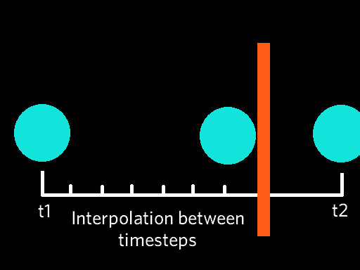

Projects
Custom Game Engine
RepositoryGrasping the concept of camera projection proved challenging at first. Imagine you have a virtual world within a cube, where for each axis of this world is the maximum floating-point value that a computer can represent, now imagine you want to set up a view point and look through this world.
| matrix representation of a world |
|---|
One might assume it'd be as simple as viewing the world through one side of the cube and
displaying everything on screen, but this is an inaccurate representation of 3D perception for
key reasons:
Imagine we flatten the Z-Axis, which is fundamentally the same idea as viewing this world from
one of its sides.
| flattened world |
|---|
 |
This suddenly creates a problem, if you imagine those two particles moving away from the view
point in a parallel path, then it would appear as the particles are keeping the same distance
from each other on the screen, as it is linearly defined in this world, but that's not how 3D
perception works, the particles should appear closer together as they move away.
This is where camera projection comes in, by creating a virtual frustum, we can define two
planes, a near plane and a far plane, and project the objects that are present inside, which
enables depth perception.
| camera frustum |
|---|
Physics presents a significant challenge in game development due to processing limitations and
the need to balance realistic physics with interactivity. This often necessitates making
trade-offs in performance and accuracy.
Main Types of Collision Detection:
1. Discrete Collision Detection
The most direct approach involves updating an object's position at each timestep of the physics simulation and checking for a collision, However, if an object is moving too quickly, there is a possibility it could phase through walls without detection.
| discrete collision |
|---|
2. Continuous Collision Detection
This method calculates potential collisions ahead of time based on an object's trajectory, by interpolating the positions of the object between time steps, this is computationally expensive, but provides higher accuracy than the discrete method.
| continuous collision |
|---|
|  |